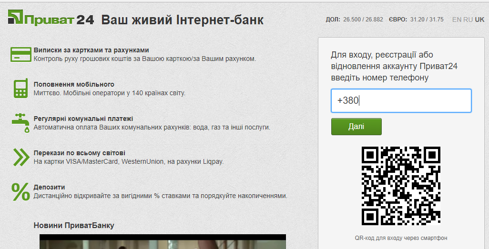
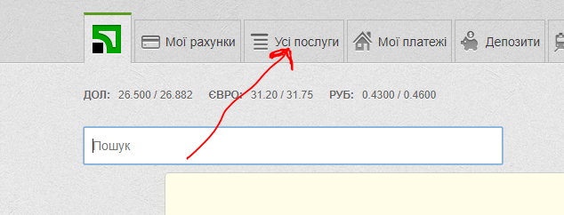
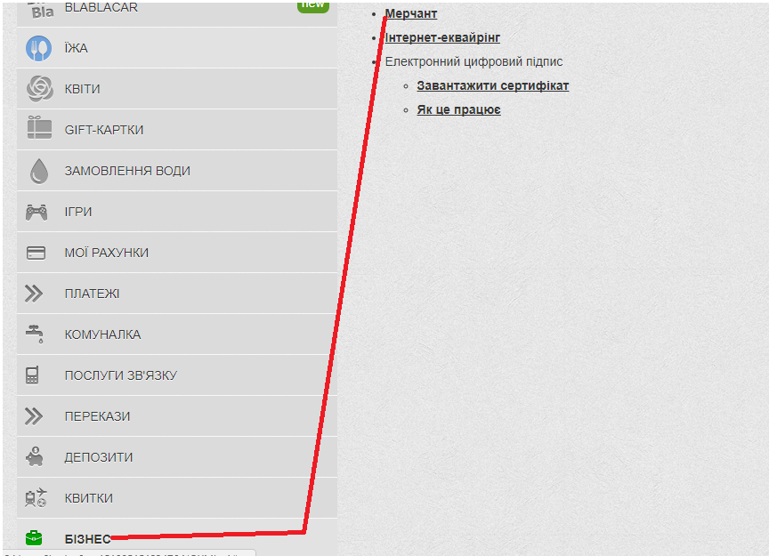
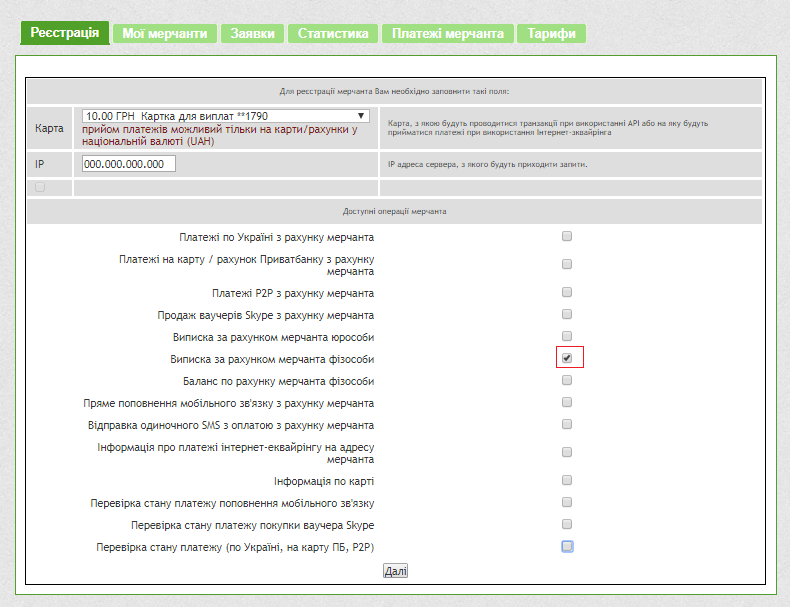
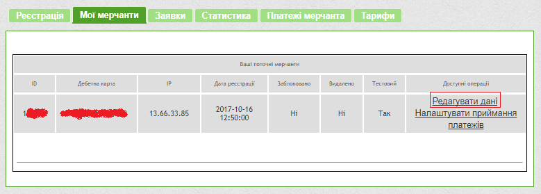
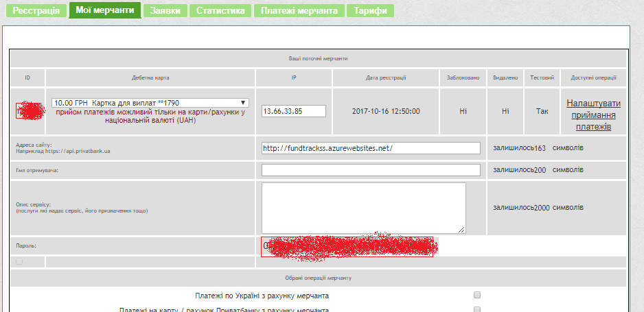
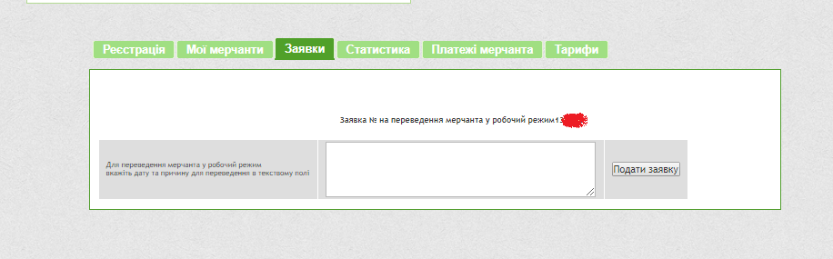

<div>
    <div *ngIf="!showSpinner" class="background">
        <div class="panel panel-default">
            <div class="panel-heading text-truncate" style="font-size:medium;text-align:center;">
                Додаткові налаштування та довідка для адміністраторів та модераторів організації.
            </div>
        </div>
        <div>
            <div>
                <span>Налаштування інтервалу для автоматичного імпорту інформації про виписки з Privat24</span>
                <span *ngIf="!isBankAccountsAvailable">
                    У вашої організації немає банківських рахунків для цієї можливості. Створіть <a [routerLink]="['/finance/orgaccounts']" class="linkBack">новий</a>
                    банківський рахунок та підключіть мерчант Privat24 або зробіть це з вже існуючим рахунком
                </span>
            </div>
            <div>
                <br><label class="control-label col-md-6 ">Виберіть інтервал для оновлення:</label>
                <select class="form-control col-md-2" [(ngModel)]="intervals.minutes" required="" id="interval" (ngModelChange)="onChangeSelection($event)">
                    <option [ngValue]="undefined" selected>Інтервал</option>
                    <option *ngFor="let item of intervals" value={{(item.minutes)*1}}>{{item.name}}</option>
                </select>
            </div>
        </div>
        <div>
            <br>
            <p>
                <strong> Активаці мерчанта можлива ТІЛЬКИ для приватних підприємців та юридичних осіб</strong><br>
            </p>
            <p>
                Для початку потрібно перейти
                на сайт <a href="https://www.privat24.ua/#login" target="_blank">privat24.ua</a> и авторизуватись під своїм логіном і паролем.
            </p>
            
            
            <p>
                Далі переходим по вкладці «<b>
                    Усі послуги
                </b>», вибираєм пункт «<b>Бізнес</b>» и «<b>Мерчант</b>».
            </p>
            
            
            <p>
                В першій вкладці  «<b>Реєстрація</b>» в
                випадаючому списку вибрати картку, яка планується/використовується для приймання платежів, вибрати лише «<b> Виписка за рахунком мерчанта фізособи</b>»
                і нажати кнопку«<b>Далі</b>» внизу форми реєстрації.
            </p>
            
            <p>
                Після цього перейдіть в вкладку 
                «<b>Мої мерчанти</b>», де буде відображатись створений Вами мерчант (його ID, номер картки і так далі).
            </p>
            
            <p>
                Перейти на сторінку «<b>Редагувати дані</b>» і
                заповнити додаткову інформацію про мерчант (IP 23.102.173.246)
            </p>
            
            <p>
                Після заповнення нажати на кнопку  «<b>Зберегти зміни</b>».
            </p>
            <p>
                Після збереження вам знову перейти знову на «<b>Редагувати дані</b>». Скопіювати спеціальний пароль і ID Вашого
                мерчанта. Їх потрібно використати на сайті в «<b>Керуванні рахунком</b>» Банківського рахунку
            </p>
            <p>
                В вкладці «<b>Заявки</b>» подайте
                заявку працівникам банку на переведення мерчанта в рабочий режим. Після підтвердження ви успішно можете використовувати ці дані на даному сайті 
            </p>
            
        </div>
    </div>
</div>